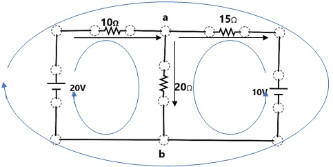
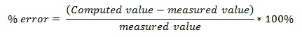

At the end of this activity, should be able to state Kirchhoff’s current and voltage law then use these in analyzing series-parallel combinations.

At the end of this activity, should be able to state Kirchhoff’s current and voltage law then use these in analyzing series-parallel combinations.
Activity 3.4. Kirchhoff's Laws
1. Refresh the simulation page to create a new working space. Plot the circuit elements as shown in the circuit below then proceed to the succeeding steps to correctly analyze the circuit. The loops and arrows are merely directions needed in the subsequent steps and are not considered part of the circuit 
In the previous activity (Activity 3.3), Ohm’s law can be used alone by combining the resistors and come up with the equivalent resistance to solve for voltages and currents circulating within the circuit. However, the circuit presented above cannot be simply broken down into series or parallel connections. This type of circuit requires the use of Kirchhoff’s current law (KCL) which is also known as junction rule and the Kirchhoff’s voltage law (KVL) normally referred to as the loop rule.
2. Draw the circuit diagram in the data and observation sheet. Label the circuit elements and use the correct symbols.
3. Measure the voltage across the resistor using the voltmeter. List the values in Table 1 under the column measured in the data and observation sheet.
4. Using the non-tact ammeter, measure the current passing through each branch. Take note that there are three branches in this circuit separated by nodes a and b. The first branch from node a to node b through the 10 Ω resistor and the 20V battery. The second branch is from node a to node b that encompasses the 20Ω resistor while the last branch is from node a to node b through the 15Ω resistor and 10V battery. List the values in Table 1 under the column “measured” in the data and observation sheet.
5. Label the current passing through the first branch as I1, the second branch as I2 and the last branch as I3 in the diagram you have drawn. Doing this indicates that there are three separate values of current for each branch.
6. The values of voltage and current you have measured can be computed using Kirchhoff’s laws. To solve for the current passing through the resistors in each of the branch, the junction rule or Kirchhoff’s current law should be used. Applying the rule, take node a as the point where I1 enters and leaves as I2 and I3. A current that enters a junction is assigned with a positive convention while a negative sign is for current that leaves the junction. Thus, the junction rule implies that I1-I2-I3 =0. At node b, the equation is I2+I3 -I1= 0 which is the same with that of node a. Transforming this equation will result to I1=I2+I3. Write this equation in your solution and label it as equation 1.
7. To solve for the voltage across each resistor, the loop rule will be used. A loop is a simple closed path in a circuit in which no circuit elements or nodes is run into more than once. In the circuit, there are a total of three loops indicated by the blue lines. The direction of the loops (clockwise or counterclockwise) can be arbitrarily chosen. You can simply choose the direction you want. In your diagram, label the loops as loop 1 (left inner loop), loop 2 (right inner loop) and loop 3 (biggest outer loop).
8. Use the loop rule to solve for the voltage/potential difference across the resistors. Accordingly, the algebraic sum of all voltages in a closed loop is zero. Using this principle, determine the equations for all loops. Start from the battery or a resistor then move around the loop making a complete loop. Take note that from Ohm’s law, V=IR.
However, use the sign conventions for battery and resistor.
| For battery: | positive voltage if loop travels from – to + terminal of the battery |
| negative voltage if loop travels from + to – terminal of the battery | |
| For resistor: | positive voltage if loop travels in the opposite direction with current |
| negative voltage if loop travels in the same direction with current |
Using the loop rule and sign conventions, the equation for loop 1 is derived below.
Loop 1: ΣV = 0
| Voltage (20V battery) + Voltage (10Ω resistor) +Voltage (20Ω resistor) = 0 | |
| 20+I1R1+I3R3=0 | |
| 20 -I1R1-I3R3=0 | (the sign conventions were used) |
| 20 - I1R1 - I3R3 = 0 | |
| 20 -10I1 - 20I3 = 0 | |
| -10I1 - 20I3 = -20 | (equation 2) |
9. For loop 2 (right inner loop), derive the equation and label it as equation 3 in your solution. The equation should be 15I2 -20I3 = -10.
10. For loop 3 (biggest loop), derive the equation and label it as equation 4 in your solution. The equation should be -10I1 - 15I2 = -10.
11. Substitute equation 1 (I1=I2+I3) to equation 2 to derive another equation. Label this as equation 5. The equation you should derive should be -10I2 -30I3 = -20.
12. Add equations 3 and 5 since they have common unknown variable (I2 and I3). Apply the rules in simplifying equations by elimination. Eliminate I2 to solve for the value of I3.
13. Substitute the value of I3 you have computed to either equation 2 or 3 then solve for the remaining unknown variable (I1 or I2).
14. Solve for the remaining unknown variable using the values you have derived. At this point, the current passing through the three branches are already known. Show all your solutions in data and observation.
15. Solve for the voltage across each resistor using Ohm’s Law (V=IR). Show your solution in data and observation.
16. Record all the values in the table 1. Compare if the computed values are the same with that of the measured values. If there are inconsistencies, countercheck your solutions to come up with the correct ones. Take note that if a negative current is computed, the direction of the current you have arbitrarily chosen should be in the opposite direction.
17. Compute the average percentage error by using the equation 
18. Before closing the simulation, double check if you have followed the procedure correctly. Proceed to the next phase then accomplish the data and observation sheet.